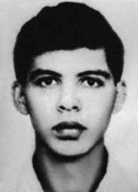

Idalísio
Soares
Aranha
Filho
CIRCUNSTÂNCIAS DA MORTE
Segundo o Relatório Arroyo, Idalísio Soares Aranha Filho fazia parte de um grupo de guerrilheiros que caiu em uma emboscada do Exército, na Grota Vermelha, aproximadamente a 50 metros da estrada.
No episódio, ocorrido em julho de 1972, um dos seus companheiros, João Carlos Haas Sobrinho, foi ferido na coxa, levando-os a parar na mata com o fim de descansar por alguns dias. Ao longo deste período, Idalísio saiu para caçar e se perdeu, buscando refúgio em um barraco, próximo à casa de um morador chamado Peri.
Ângelo Arroyo narra que o Exército apareceu no local, dias depois, e travou um tiroteio com o guerrilheiro, que terminou morto. Conforme o livro Dossiê Ditadura, em depoimento publicado na obra Vestígios do Araguaia, a sobrevivente da guerrilha, Regilena Carvalho Leão de Aquino, afirma ter ouvido do general Antônio Bandeira que Idalísio teria morrido após resistir bravamente a uma emboscada do Exército.
Neste sentido, o relatório do Ministério da Marinha, encaminhado ao ministro da Justiça Maurício Corrêa, em 1993, consigna que Idalísio “foi morto por ter resistido ferozmente na região de Peri”, em julho 1972. Os demais registros militares divergem, ora acerca da data, ora acerca do local de morte de Idalísio.
O livro da CEMDP menciona um documento dos Fuzileiros Navais entregue, anonimamente, à Comissão de Representação Externa da Câmara Federal, que assenta o tiroteio como tendo ocorrido em 12 de julho de 1972, na região de Perdidos, distante nove léguas a Oeste de Caianos. Esta localidade e data constam também na Carta de instrução 1/72 da Operação Papagaio, assinada pelo comandante da Força de Fuzileiros da Esquadra, Uriburu Lobo da Cruz, conforme aponta o livro Dossiê Ditadura.
Já o Relatório da Manobra Araguaia, assinado pelo general Antônio Bandeira indica a mesma região de Perdidos, mas estabelece 13 de julho de 1972 como a data de morte de Idalísio. Este dia também é apontado em um relatório produzido em 1972 pelo CIE, Ministério do Exército que, por sua vez, registra Marabá (PA) como o local do óbito.
Por fim, outro relatório produzido pela mesma instituição, registra a data 13 de junho de 1972, indicando um possível erro de datilografia.
According to the Arroyo Report, Idalísio Soares Aranha Filho was part of a group of guerrillas who fell into an Army ambush, in Grota Vermelha, approximately 50 meters from the road.
In the episode, which occurred in July 1972, one of his companions, João Carlos Haas Sobrinho, was injured in the thigh, causing them to stop in the woods in order to rest for a few days. During this period, Idalísio went hunting and got lost, seeking refuge in a shack, close to the house of a resident named Peri.
Ângelo Arroyo narrates that the Army appeared at the location, days later, and engaged in a shootout with the guerrilla, who ended up dead. According to the book Dossiê Ditadura, in a statement published in the work Vestígios do Araguaia, the guerrilla survivor, Regilena Carvalho Leão de Aquino, claims to have heard from General Antônio Bandeira that Idalísio had died after bravely resisting an Army ambush.
In this sense, the report from the Ministry of the Navy, sent to the Minister of Justice Maurício Corrêa, in 1993, states that Idalísio “was killed for having resisted fiercely in the region of Peri”, in July 1972. The other military records differ, sometimes regarding the date, sometimes regarding the place of Idalísio's death.
The CEMDP book mentions a document from the Marines delivered, anonymously, to the External Representation Committee of the Federal Chamber, which states the shooting as having occurred on July 12, 1972, in the region of Perdidos, nine leagues west of Caianos. This location and date are also included in the Instruction Letter 1/72 of Operation Papagaio, signed by the commander of the Squadron's Marine Force, Uriburu Lobo da Cruz, as shown in the book Dossier Ditadura.
The Araguaia Maneuver Report, signed by General Antônio Bandeira, indicates the same region as Perdidos, but establishes July 13, 1972 as the date of Idalísio's death. This day is also mentioned in a report produced in 1972 by the CIE, Ministry of the Army, which, in turn, records Marabá (PA) as the place of death.
Finally, another report produced by the same institution records the date June 13, 1972, indicating a possible typing error.
Según el Informe Arroyo, Idalísio Soares Aranha Filho formaba parte de un grupo de guerrilleros que cayeron en una emboscada del Ejército, en Grota Vermelha, aproximadamente a 50 metros de la carretera.
En el episodio, ocurrido en julio de 1972, uno de sus compañeros, João Carlos Haas Sobrinho, resultó herido en el muslo, lo que les obligó a detenerse en el bosque para descansar unos días. Durante este período, Idalísio salió a cazar y se perdió, buscando refugio en una choza, cerca de la casa de un vecino llamado Peri.
Ângelo Arroyo narra que el Ejército se presentó en el lugar, días después, y entabló un tiroteo con el guerrillero, quien terminó muerto. Según el libro Dossiê Ditadura, en una declaración publicada en la obra Vestígios do Araguaia, la sobreviviente de la guerrilla, Regilena Carvalho Leão de Aquino, afirma haber escuchado del general Antônio Bandeira que Idalísio había muerto después de resistir valientemente una emboscada del Ejército.
En este sentido, el informe del Ministerio de Marina, enviado al Ministro de Justicia Maurício Corrêa, en 1993, afirma que Idalísio “fue asesinado por haber resistido ferozmente en la región de Peri”, en julio de 1972. Los demás registros militares difieren, a veces en cuanto a la fecha, a veces en cuanto al lugar de la muerte de Idalísio.
El libro del CEMDP menciona un documento de la Infantería de Marina entregado, anónimamente, a la Comisión de Representación Externa de la Cámara Federal, que afirma que el tiroteo ocurrió el 12 de julio de 1972, en la región de Perdidos, nueve leguas al oeste de Caianos. Este lugar y fecha también están incluidos en la Carta de Instrucción 1/72 de la Operación Papagaio, firmada por el comandante de la Fuerza de Infantería de Marina de la Escuadrilla, Uriburu Lobo da Cruz, como consta en el libro Dossier Ditadura.
El Informe de Maniobra de Araguaia, firmado por el general Antônio Bandeira, indica la misma región que Perdidos, pero establece el 13 de julio de 1972 como fecha de la muerte de Idalísio. Este día también es mencionado en un informe elaborado en 1972 por el CIE, Ministerio del Ejército, que, a su vez, registra Marabá (PA) como lugar de la muerte.
Finalmente, otro informe elaborado por la misma institución registra la fecha 13 de junio de 1972, lo que indica un posible error tipográfico.